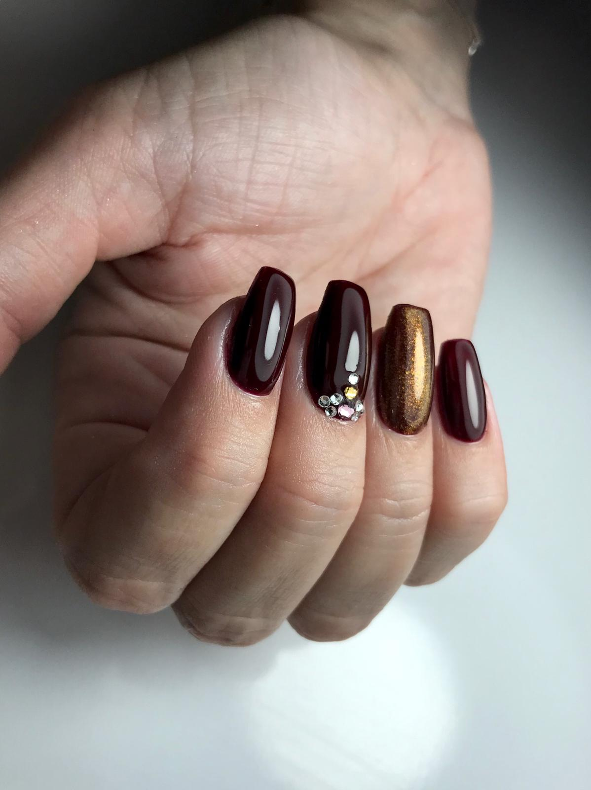
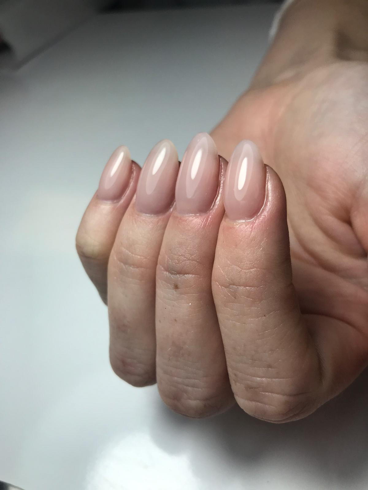

Form, Länge, Farbe und Haltbarkeit werden passend zu Händen, Alltag und Anlass abgestimmt.
Nagelstudio in Tamm
Gepflegte Nägel, die sauber wirken und lange Freude machen.
GI Nails in der Bahnhofstraße 20 verbindet Maniküre, Gellack, Naturnagelverstärkung, Nail Art und Fußpflege mit persönlicher Terminabstimmung.
Mo, Mi, Fr 10-18 Uhr
Di & Do 10-20 Uhr
Sa nach Vereinbarung
Studio
Ruhige Pflege, saubere Arbeit und ein Look, der zu Ihrem Alltag passt.
Maniküre, Gellack, Auffüllen, Neumodellage, French, Babyboomer und Fußpflege sind klar eingeordnet.
Bahnhofstraße 20, gut erreichbar und mit Terminabstimmung per WhatsApp, Telefon oder Instagram.
Lookbook
Von cleanem Nude bis Glitzer-Akzent.


Leistungen
Für natürliche Pflege, haltbare Modellage und kleine Details.
Maniküre & Gellack
Pflege, Form, Nagelhaut und Wunschfinish für gepflegte Hände im Alltag.
Naturnagelverstärkung
Auffüllen, Clear, Camouflage oder Farbe für mehr Stabilität und saubere Länge.
French & Babyboomer
Ruhige, elegante Übergänge oder klassische French-Linie mit präzisem Finish.
Fußpflege & Gellack
Fachfußpflege mit Hornhautentfernung, Pflege und optionalem Gellack.
Vertrauen
Das Ergebnis zählt, aber die Behandlung davor entscheidet.
Bei Nägeln kaufen Kundinnen nicht nur Farbe. Sie kaufen saubere Vorbereitung, sorgfältige Nagelhautpflege, stabile Modellage und eine Beratung, die Form, Länge und Alltag berücksichtigt.
Nagelhaut, Form und Oberfläche werden sauber vorbereitet, damit das Finish gepflegt bleibt.
Länge, Farbe, French, Babyboomer oder Extras werden passend zu Wunsch und Alltag abgestimmt.
Bahnhofstraße 20, gut für Stammkundinnen und kurze Rückfragen erreichbar.
Preise
Die wichtigsten Leistungen auf einen Blick.
Pflege, Form und Gellack-Finish für gepflegte Hände.
Maniküre27,-
Maniküre + Nagellack32,-
Auffüllen kurz48,-
Auffüllen lang53,-
French / Babyboomer kurz57,-
Neumodellage + Farbe66,-
French / Babyboomer neu72,-
Fachfußpflegeab 43,-
Fußpflege + Gellack66,-
Terminbuchung
Planity öffnen oder direkt per WhatsApp anfragen.
Wählen Sie den Weg, der am besten passt: Planity-Profil für den Überblick oder WhatsApp für eine persönliche Terminabstimmung.
WhatsApp Anfrage
Leistung
Mitarbeiterin
Wählen Sie eine Leistung.
Anfahrt
Bahnhofstraße 20 in Tamm.
GI Nails Nagelstudio liegt in 71732 Tamm. Termine werden telefonisch geklärt; Samstag nach Vereinbarung.
Kurz geklärt
Wichtige Infos vor dem Termin.
Wie frage ich einen Termin an?
Über das Planity-Profil oder direkt per WhatsApp. Für WhatsApp werden Leistung, Mitarbeiterin, Name, Rückrufnummer, Wunschzeit und Hinweis in eine vorbereitete Nachricht übernommen.
Welche Angaben helfen bei der Anfrage?
Hilfreich sind gewünschte Länge, Farbe, French, Babyboomer, Nail Art oder ob ein Nagel repariert werden soll. So kann der Termin besser eingeschätzt werden.
Was passiert bei Absage?
Laut Preisliste sollen Termine mindestens 24 Stunden vorher abgesagt werden; nicht rechtzeitig abgesagte Termine werden mit 15,- berechnet.
Gibt es Fußpflege?
Ja, Fachfußpflege, Einzelleistungen und Fußpflege mit Gellack sind in der Preisliste enthalten.
Jetzt klären
Bereit für gepflegte Nägel?
Wählen Sie Planity für den Überblick oder senden Sie Ihren Terminwunsch direkt per WhatsApp an GI Nails in Tamm.